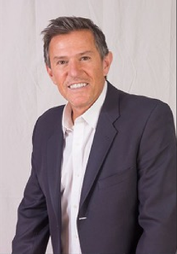
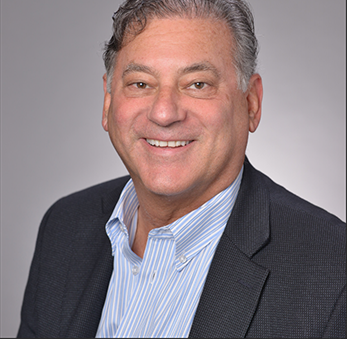
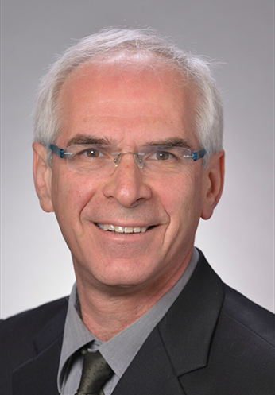
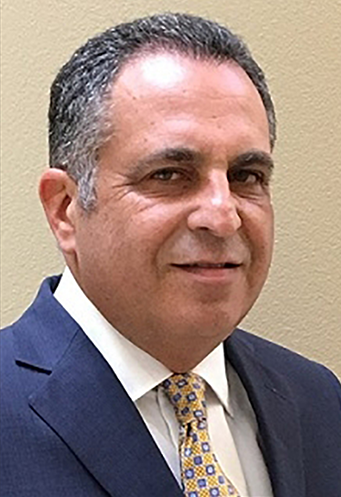

mission
Furthermore, Prof Peñarrocha graduated in Medicine and Surgery at the University of Valencia in 1979. First, he specialized in Stomatology and Neurology in Valencia. Afterward, he got a PhD from the University of Valencia in 1987 and, finally, a MDS in Oral Surgery and Implantology from the University of Barcelona in 2000. Besides, Prof Peñarrocha is a fellow of the European Board of Oral Surgery. In particular, he undertook diverse research projects with public funding. Additionally, Prof Peñarrocha took part.
MANAGMENT

Dr Adi Lorean
CEO & Partner

Radu Trăscău
Communication and
Marketing Managerr
Radu Trăscău dedicated his passion to communication in all its forms. He started by working in most renowned national televisions and moved to digital communication six years ago, searching for new challenges. He is currently doing a Ph.D. in technology and innovation, researching how public institutions’ communication could be more transparent with the citizens using new technologies platforms.

Dr. Carlos Aparicion
President and Founder

Dr. Jaume Villanueva
Co-Founder
JOIN OUR experts
They provide patients suffering from severe maxillary atrophy with a secure and immediate solution for the placement of fixed teeth on zygomatic implants. The treatment takes place in highly competent centers internationally: the EZgoma Centers. Furthermore, The network of highly experienced experts in zygomatic implants aims to enhance the treatment’s success rate via scientific research.
©2013-2021 All right reserved, Noris Medical
Design by Namelesspace